Chronicles of the Realm
Drag a timeline through 2,400 years of Chinese history and click any ancient city to see how its name and rulers changed.

Open-source apps you can use without writing code. Every tool from our videos is here, with its link.
Drag a timeline through 2,400 years of Chinese history and click any ancient city to see how its name and rulers changed.
A free, open-source music player with no ads or tracking that works on Windows, Mac, and Linux.
A free, open-source desktop app that organizes your downloads with queues, schedulers and browser extensions.
A free desktop cat for Windows and macOS that follows your mouse and reacts to every key you press.
Convert images, PDFs, documents and more just by dragging files onto a format, offline and free.